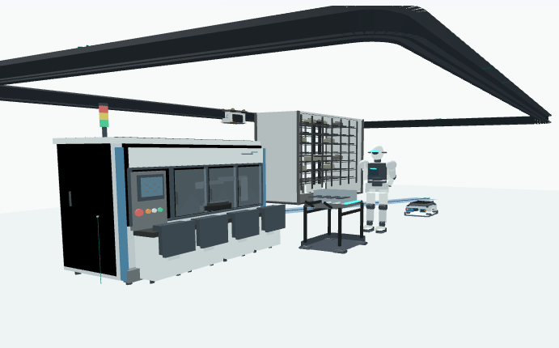

AS
GR Auto Simulation
Quickly build and validate OHT, AGV, OHS, and AMHS flows from drawings and material-flow demand with 3D animation and KPI monitoring.
GigaRoute AI connects custom modeling from CAD/DXF, JSON, and customer-specific data or interfaces with material-flow network analysis, event-driven simulation, and lightweight animation in one practical workflow.

Custom AMHS Simulation Software
Quickly build and validate OHT, AGV, OHS, and AMHS flows from drawings and material-flow demand with 3D animation and KPI monitoring.
An advanced modeling environment for customer scenarios that require detailed control logic, custom events, and repeated experiments.
Custom development scoped to site data, operating rules, controller integration, and business-system interfaces.
Professional consulting
We develop custom logistics and AMHS simulators and provide GigaRoute AI simulation, workflow automation, code refactoring, and performance-improvement services across customer-specific engineering and business processes. Existing AutoMod models and workflows are also supported.
We build purpose-fit logistics and AMHS simulators around each customer's site drawings, equipment configuration, material-flow demand, control rules, and analysis goals, covering new implementations and modernization of existing models.
Model layouts, equipment, stations, ports, routes, and transfer flows from CAD/DXF, JSON, CSV, and customer data to match the actual facility.
Represent dispatching, motion, merges, traffic control, and operating rules for OHT, AGV, AMR, and OHS systems, then analyze throughput, cycle time, utilization, and bottlenecks.
Configure purpose-built run screens, scenario and KPI reports, and data-conversion tools, with MCS, WCS, MES, and other system integrations scoped when required.
Leverage AI agents and workflow-automation technology to intelligently automate repetitive engineering, design, office, and project-operation tasks while improving data consistency, documentation quality, and workflow efficiency.
Develop intelligent work-support solutions that apply AI-agent technology to enable task analysis, automation, optimization, and monitoring.
Automate CAD and design-tool work alongside Atlassian Jira and Confluence for SW development issue, documentation, and collaboration workflows in one integrated solution.
Automate repetitive Microsoft Office work in Excel, Word, and PowerPoint, as well as data preparation, document and report generation, file processing, and other customer-specific business workflows.
We diagnose software structure and runtime performance, reduce unnecessary complexity and resource use, and improve execution speed, efficiency, and maintainability.
Analyze duplicate code, excessive coupling, complex dependencies, and high-maintenance structures to clarify module boundaries and responsibilities while improving code quality and changeability.
Use profiling and runtime data to analyze CPU, memory, I/O, processing latency, and bottlenecks, then improve execution performance and resource efficiency.
Reduce unnecessary features, dependencies, and deployment size while modernizing older code and build structures for a lighter runtime and better long-term maintainability.
RESEARCH
The GigaRoute AI team continues research into AI/big-data integration platforms and logistics simulation.
This paper proposes an integrated platform that unifies machine-learning modeling and large-scale distributed big-data processing on an NVIDIA GPU computing environment, covering the build approach based on Hadoop Eco System, Ambari, and Jetson TX-1, along with the expected benefits.
Read the paper on SCIRP →TUTORIAL
GigaRoute AI
We are building an independent platform that connects manufacturing logistics modeling and simulation faster and more efficiently.